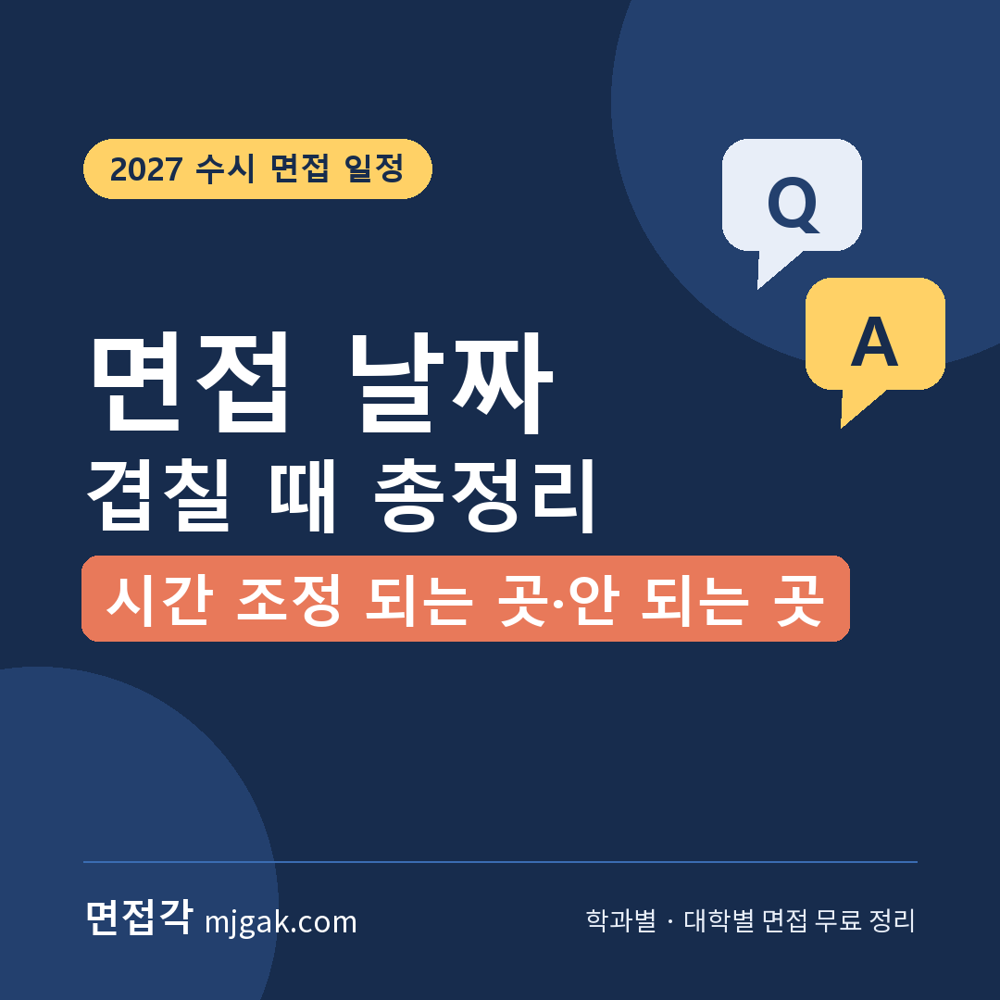
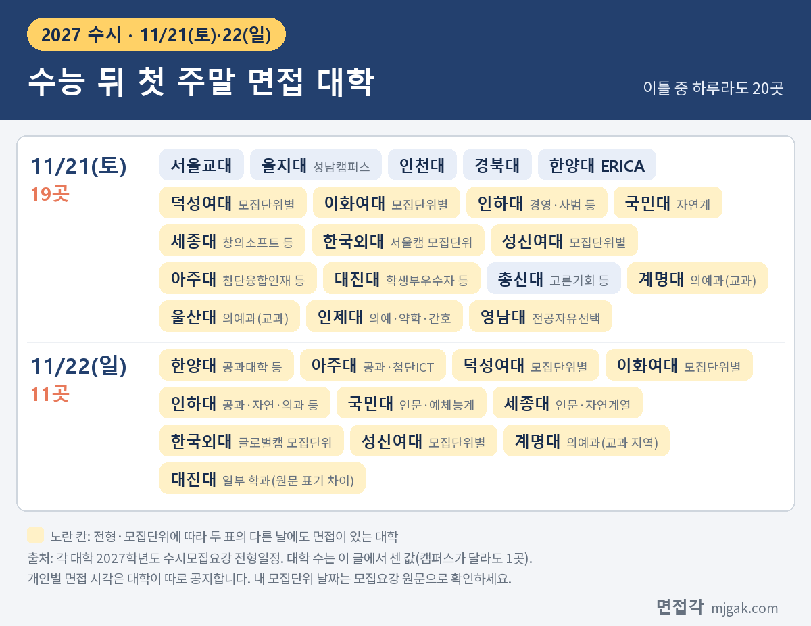
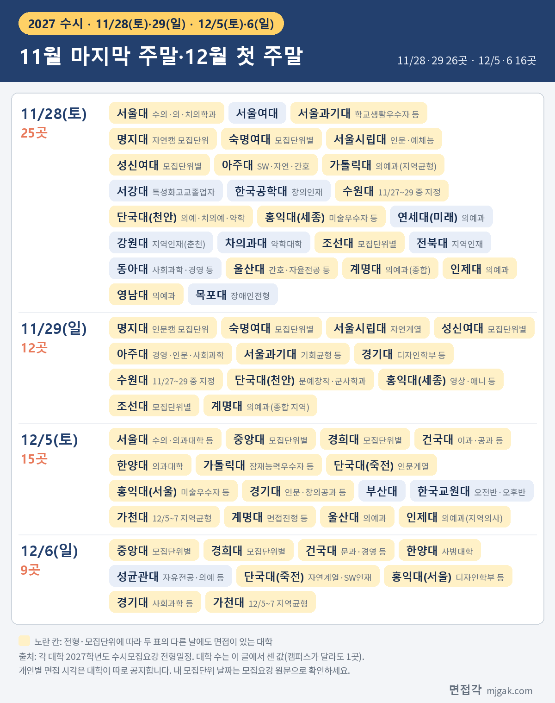
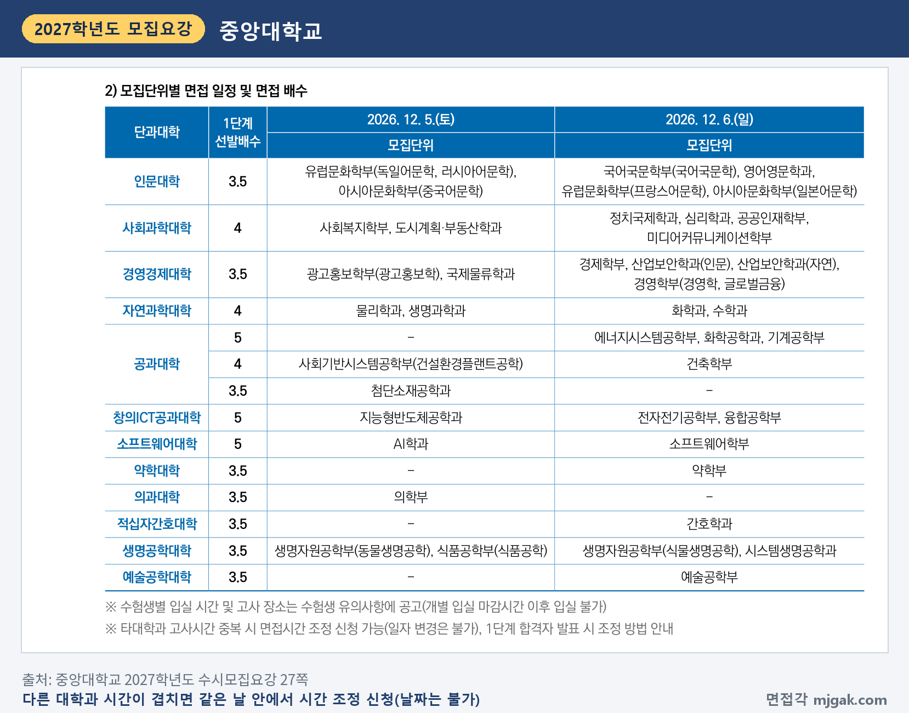
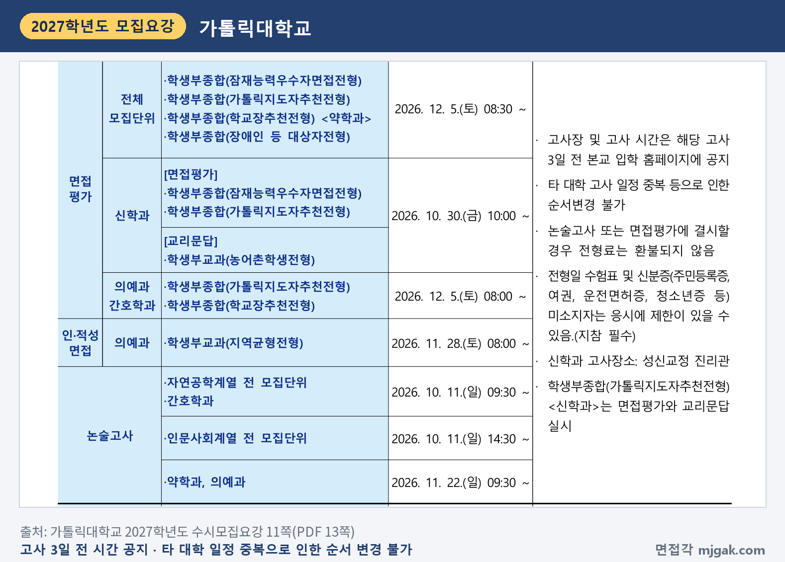
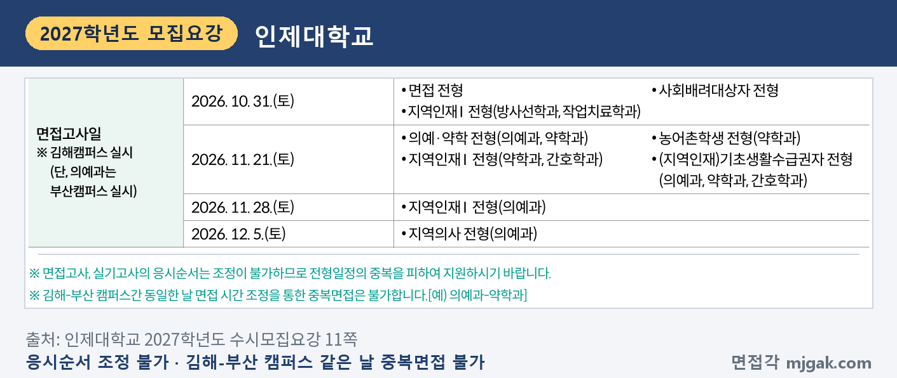

Ctrl+V (서식 유지됨)제목
본문 (이 영역 전체가 복사됩니다)
📷 여기에 이미지 넣기 — 썸네일 — thumb-clash.png (대표 이미지로 지정)
2027학년도 수능은 2026년 11월 19일(목)입니다. 수능이 끝나면 주말마다 수시 면접이 이어지고, 지원한 두 대학의 면접이 같은 날 잡히기도 합니다. 이 글은 면접각이 정리한 대학별 데이터에서 수능 뒤 세 주말(11월 21·22일, 28·29일, 12월 5·6일)에 면접이 있는 대학을 뽑아 각 대학 2027학년도 수시모집요강으로 날짜를 다시 확인하고, 날짜마다 몇 곳이 겹치는지 셌습니다. 그리고 겹쳤을 때 할 수 있는 것을 모집요강 규정으로 정리했습니다. 다른 대학과 시간이 겹치면 조정 신청을 받는 대학이 있고, 어떤 경우에도 시간을 바꾸지 않는다고 적은 대학이 있습니다. 개인별 면접 시각을 알려 주는 날도 대학마다 다릅니다. 같은 날 두 곳을 볼 때 확인할 입실 시각·캠퍼스·결시 규정과 자주 묻는 것, 체크리스트까지 담았습니다. 수능 뒤 면접이 둘 이상 남은 고3과 재수생, 일정을 함께 챙기는 학부모님이 읽으시면 됩니다.
1. 수능 뒤 면접이 몰리는 날
아래 두 표는 11월 21일~12월 6일 토·일에 면접이 있는 대학을 날짜별로 모은 것입니다. 그날 면접을 보는 전형이나 모집단위가 하나라도 있으면 1곳으로 셌고, 캠퍼스가 다른 단국대(죽전·천안)와 홍익대(서울·세종)도 1곳으로 셌습니다. 수원대(11월 27~29일)·가천대(12월 5~7일)처럼 기간 안에서 날짜를 지정하는 대학은 기간에 든 날마다 셌습니다. 대학 수는 모두 이 글에서 센 값이고, 면접각 데이터에서 뽑아 모집요강으로 확인한 대학만 센 값이라 실제로는 더 많을 수 있습니다.
📷 여기에 이미지 넣기 — 이미지 1 — clash-table-1.png
📷 여기에 이미지 넣기 — 이미지 2 — clash-table-2.png
11월 21일(토)은 19곳, 22일(일)은 11곳이고, 이틀 중 하루라도 면접이 있는 대학은 20곳입니다. 11월 28일(토)은 25곳으로 이 글에서 센 날 가운데 가장 많고, 29일(일)은 12곳, 이틀을 합치면 26곳입니다. 12월 5일(토)은 15곳, 6일(일)은 9곳, 합치면 16곳입니다. 세 주말을 모두 합치면 적어도 47개 대학입니다.
같은 대학 안에서 모집단위별로 날짜를 나눈 곳이 여럿입니다. 국민대 국민프런티어는 자연계가 11월 21일, 인문계·예체능계가 22일이고(10쪽), 한국외대 면접형은 서울캠퍼스 모집단위가 21일, 글로벌캠퍼스 모집단위가 22일입니다(24쪽). 명지대 명지인재면접은 자연캠퍼스 모집단위가 28일, 인문캠퍼스 모집단위가 29일이고(47쪽), 서울시립대 면접형은 인문·예체능계열이 28일, 자연계열이 29일입니다(3쪽). 중앙대 탐구형인재는 12월 5일과 6일에 모집단위별로 나뉩니다(27쪽).
의예과 등 일부 모집단위만 날짜가 다른 대학도 있습니다. 서울대 일반전형은 수의과대학·의과대학·치의학대학원 치의학과만 11월 28일이고 나머지는 27일(금)입니다(2쪽). 한양대 면접형은 공과대학 등이 11월 22일, 의과대학이 12월 5일, 사범대학이 12월 6일입니다(PDF 8쪽). 표에서 노란 칸으로 표시한 대학은 내 모집단위가 어느 날인지 원문으로 꼭 확인하세요.
대진대 학생부우수자전형은 11월 21일(토)에 면접을 보고, 지원인원에 따라 일부 학과는 하루 더 봅니다. 그 날짜가 12쪽 일정표에는 11월 22일(일), 16·18쪽 전형 안내에는 "11.16.(일)"로 적혀 있어 원문 표기가 서로 다릅니다(11월 16일은 월요일). 표에는 12쪽 기준으로 넣었으니, 대진대 지원자는 입학처에 날짜를 확인하세요.
11월 27일(금)에도 서울대 일반전형(2쪽)과 강원대 미래인재면접(3쪽) 등이 면접을 봅니다. 금요일과 토요일이 이어지는 일정도 함께 보세요. 경찰대학은 면접시험이 12월 2일~9일 중 조를 나눠 하루씩이라(7쪽) 표에 넣지 않았습니다.
2. 겹쳤을 때 할 수 있는 것
날짜가 같다고 바로 한 곳을 포기할 일은 아닙니다. 개인별 면접 시각이 오전과 오후로 갈리면 둘 다 볼 수도 있습니다. 다만 시간을 조정해 주는지는 대학마다 다릅니다. 모집요강에서 확인한 규정을 네 가지로 나눴습니다.
(가) 시간 조정 신청을 받는 대학
수능 뒤 세 주말에 면접을 보는 대학 중 다른 대학과 시간이 겹칠 때 조정 신청을 받는다고 적은 곳은 중앙대입니다. 탐구형인재는 "타대학과 고사시간 중복 시 면접시간 조정 신청 가능(일자 변경은 불가)"이라고 적었고, 조정 방법은 1단계 합격자 발표 때 안내합니다(27쪽). 1단계 발표는 11월 26일(목) 14시입니다(27쪽). 같은 날 안에서 시간만 바꿀 수 있고 날짜는 바꿀 수 없습니다. 같은 문구가 다른 학생부종합 전형 안내에도 있습니다(32·36쪽).
📷 여기에 이미지 넣기 — 캡처 1 — 중앙대학교 2027학년도 수시모집요강 27쪽: cau-2027-clash-adjust.png
(나) 수험생이 날짜를 고르는 대학
백석대는 고사일이 2일 이상인 모집단위면 원서접수 때 고사일을 고를 수 있게 했습니다. 일자별 수용인원이 넘치면 대학이 임의로 배정합니다(6·18쪽). 서경대는 실기고사와 군사학과 고사 일시를 정해진 시간에 예약하게 하고, 예약하지 않으면 무작위로 배정합니다(6~7쪽). 두 대학 모두 10월에 끝난 일정이고, 이 글에서 확인한 수능 뒤 주말 면접 대학에서는 이런 방식을 찾지 못했습니다.
반대로 고를 수 없다고 적은 대학이 있습니다. 전북대는 면접조(오전/오후)를 선택하거나 조정할 수 없습니다(16쪽). 조선대 에이지테크·라이프케어·간호학과는 11월 28·29일 중 하루가 무작위로 배정되고 날짜를 개인이 정할 수 없습니다(49쪽). 수원대 고교추천전형은 11월 27~29일 중 계열 구분 없이 대학이 지정합니다(34쪽).
(다) 조정·변경이 안 된다고 적은 대학
다른 대학과 겹치는 경우를 직접 적은 곳은 가톨릭대입니다. 고사장과 시간을 고사 3일 전에 공지하고, 타 대학 고사 일정 중복 등으로 인한 순서 변경은 불가합니다(11쪽).
인제대는 응시순서 조정이 불가하니 전형일정이 겹치지 않게 지원하라고 적었습니다(11쪽).
📷 여기에 이미지 넣기 — 캡처 2 — 가톨릭대학교 2027학년도 수시모집요강 11쪽(PDF 13쪽): cuk-2027-clash-order.png
개인별 일정이나 시간을 바꿀 수 없다고 적은 대학은 다음과 같습니다. 세종대(면접 일정과 입·퇴실 시간 조정 불가, 8쪽), 성신여대(개인별 면접 일정 조정·변경 불가, 10쪽), 서울여대(개인별 면접일정 절대 변경 불가, 5쪽), 서울과기대(시간 변경 불가, 27쪽), 한국외대(임의로 일시·순서 변경 불가, 24쪽), 인하대(순서 무작위 배정, 시간 변경 불가, 12쪽), 아주대(시간·순서 무작위 배정, 변경 불가, 11쪽), 단국대(배정된 일시·장소 변경 불가, 30쪽), 건국대(일자·시간 변경 불가, 31쪽), 한국교원대(오전·오후반과 개인별 시간 변경 불가, 10쪽), 수원대(개인별 지정일시 변경 불가, 12쪽), 계명대(개인별 일자·시간 변경 불가, 15쪽), 경북대(면접 순서 당일 공개, 변경 불가, 80쪽)입니다.
수능 뒤 금요일·평일 면접도 마찬가지입니다. 강원대 미래인재면접(11월 27일)은 지원자가 면접시간(오전/오후)을 조정할 수 없고(3쪽), 한림대(12월 8·9일)는 공지된 개별 면접시간과 순서를 어떠한 경우라도 조정·변경할 수 없다고 적었습니다(91쪽).
(라) 개인별 면접 시각은 언제 알려 주나
날짜가 같아도 내 시각은 대학 공지를 봐야 압니다. 그래서 겹친다고 판단하는 시점은 두 대학의 공지를 모두 본 뒤입니다. 공지 시점은 세 갈래입니다.
1단계 발표와 함께 알려 주는 대학: 성신여대 11월 13일(금) 10시(10쪽), 세종대 11월 13일(금) 17시 이후(8쪽), 한국외대 11월 16일(월)(24쪽), 국민대 11월 17일(화) 14시(10쪽), 서울과기대 11월 20일(금) 14시(27쪽), 명지대 11월 20일(금) 15시(47쪽), 서울여대 11월 25일(수) 18시(5쪽), 부산대 12월 1일(화) 16시(64쪽). 조선대(49쪽)·인하대(12쪽)·아주대(11쪽)도 1단계 발표 때 공지합니다.
따로 정한 날에 알려 주는 대학: 경북대 11월 17일(화) 10시 고사장 안내(4쪽), 인천대 11월 18일(수)(21쪽), 대진대 11월 18일(수) 14시(12쪽), 숙명여대 11월 24일(화) 17시(14쪽), 한국공학대 11월 24일(화)(5쪽), 울산대 11월 28일 면접은 11월 25일(수) 17시 수험표 출력 때(42쪽).
면접 며칠 전에 알려 주는 대학: 단국대 고사 2일 전(30쪽), 가톨릭대 고사 3일 전(11쪽), 건국대 면접 3~4일 전(31쪽), 수원대 고사 일주일 전(34쪽). 12월 5일(토) 면접이라면 가톨릭대 공지는 12월 2일(수)쯤입니다(이 글에서 계산한 값).
3. 같은 날 두 곳을 본다면
시각이 달라서 하루에 두 곳을 보기로 했다면 세 가지를 확인하세요.
첫째, 입실 마감 시각입니다. 면접 시작보다 입실 마감이 기준인 대학이 있습니다. 중앙대는 개별 입실 마감시간 이후 입실할 수 없고(27쪽), 단국대도 지정된 입실시간 이후 입실할 수 없습니다(30쪽). 한국공학대는 면접 30분 전까지 대기실 입실을 마쳐야 하고 면접 개시 후에는 입실할 수 없습니다(23쪽). 한국교원대는 입실 완료 시간이 오전반 9시·오후반 13시이고(4쪽), 그 뒤 입실자는 감점 또는 불합격 처리될 수 있습니다. 9시 20분·13시 20분(면접 시작) 전까지는 입실을 허용하되 평가위원에게 지각 사실을 알리고, 그 뒤에는 입실할 수 없으며 불합격 처리합니다. 교통체증이나 사고 같은 개인 사유 지각은 인정하지 않습니다(34쪽). 수원대는 고사 시작 이후 도착하면 입실할 수 없습니다(12쪽). 시간대를 미리 밝힌 대학도 있습니다. 한국외대는 11월 21일 서울캠퍼스 모집단위를 9시·14시 두 타임으로 나누고(24쪽), 서울과기대는 11월 28·29일 8시 30분·14시(12쪽), 서울시립대는 10시(3쪽), 이화여대는 13시 20분~19시(10쪽)입니다. 건국대는 오전·오후 각 4타임(1타임 60분)으로 진행할 예정이고 입실·종료 시간이 타임마다 다릅니다(31쪽).
둘째, 캠퍼스 위치입니다. 지원한 모집단위의 캠퍼스와 면접 장소가 다른 대학이 있습니다. 을지대는 대전·의정부 캠퍼스 모집단위를 포함해 모든 대학고사를 성남캠퍼스에서 봅니다(11쪽). 한국외대는 서울·글로벌캠퍼스 지원자 모두 서울캠퍼스에서(24쪽), 명지대 명지인재면접은 자연·인문캠퍼스 모집단위 모두 서울 인문캠퍼스에서(47쪽), 경기대는 수원캠퍼스에서(9쪽) 면접을 봅니다. 반대로 경희대는 지원한 모집단위가 속한 캠퍼스에서 보고(40쪽), 성신여대는 캠퍼스가 두 곳이니 시험 장소에 유의하라고 적었습니다(10쪽). 인제대는 김해캠퍼스에서 보되 의예과는 부산캠퍼스이고, 같은 날 김해와 부산 면접을 시간 조정으로 둘 다 보는 것은 안 됩니다(11쪽). 명지대는 고사일자·입실시간·고사장·캠퍼스 혼동으로 인한 지각과 결시를 본인 책임으로 적었고(10쪽), 경희대는 서울캠퍼스에 고사 당일 차량 진입이 어려울 수 있다며 대중교통을 권합니다(21쪽).
📷 여기에 이미지 넣기 — 캡처 3 — 인제대학교 2027학년도 수시모집요강 11쪽: inje-2027-clash-campus.png
셋째, 결시하면 불합격이라는 점입니다. 중앙대(28쪽), 서울시립대(15쪽), 숙명여대(50쪽), 서울여대(10쪽), 이화여대(44쪽), 조선대(49쪽), 명지대(12쪽), 홍익대(12쪽), 울산대(42쪽), 한국공학대(23쪽) 등은 면접에 결시하면 불합격으로 처리하고, 한국외대는 면접평가 미응시자를 입학사정 대상에서 제외합니다(24쪽). 이런 대학에서 두 번째 면접에 늦어 응시하지 못하면 1단계를 통과했어도 불합격이 됩니다. 하루에 두 곳을 볼지는 이 무게를 놓고 정해야 합니다.
아래는 이 글이 제안하는 계산 방법이고, 대학이 정한 기준이 아닙니다. ① 앞 대학의 입실 시각에 대기 시간과 면접 시간을 더해 끝나는 시각을 잡습니다. 대기 시간은 공지가 없으면 알 수 없으니 넉넉히 잡습니다. ② 지도 앱으로 같은 요일·같은 시간대의 대중교통 이동 시간을 확인합니다. ③ 뒤 대학 입실 마감까지 ①과 ②를 더하고도 1시간 이상 남는지 봅니다. ④ 빠듯하면 조정 신청이 되는 대학인지 다시 보고, 그래도 안 되면 한 곳을 고릅니다. 고를 때는 수능최저 충족 가능성과 지원 순위를 먼저 따져 보세요.
📷 여기에 이미지 넣기 — 이미지 3 — 제미나이 생성: 늦가을 창가 책상에서 같은 칸에 겹쳐 붙은 두 색 포스트잇을 보며 주말 일정을 정리하는 학생(실사) / "제미나이 프롬프트 1" · gem-clash-1.png
(AI로 만든 이미지로, 실제와 다를 수 있습니다)
4. 자주 묻는 것들
Q. 두 대학 면접 날짜가 같으면 한 곳은 포기해야 하나요?
A. 날짜가 같아도 개인별 시각이 오전·오후로 갈리면 둘 다 볼 수 있습니다. 두 대학의 시각 공지를 먼저 확인하고, 공지가 늦은 대학은 그때까지 두 경우를 모두 생각해 두세요. 공지된 시각이 겹치는데 두 대학 모두 변경 불가라면 한 곳을 골라야 합니다.
Q. 입학처에 전화하면 시간을 바꿔 주나요?
A. 수능 뒤 세 주말에 면접을 보는 대학 중 다른 대학과 겹칠 때 조정 신청을 받는다고 적은 곳은 중앙대이고, 그것도 같은 날 안에서 시간만입니다(27쪽). 가톨릭대·세종대·성신여대·서울여대 등은 바꿀 수 없다고 적었습니다. 규정이 없는 대학은 입학처에 문의할 수 있지만 조정 여부는 대학이 정합니다.
Q. 겹쳐서 한 곳을 못 가면 전형료는 돌려받나요?
A. 부산대(26쪽), 성균관대(22쪽), 서울과기대(67쪽), 한림대(99쪽)는 타 대학과 전형일이 겹쳐 결시한 경우 전형료를 반환하지 않는다고 적었습니다. 가톨릭대도 면접평가에 결시하면 전형료를 환불하지 않습니다(11쪽).
Q. 같은 대학 안에서 두 전형 면접이 겹치면요?
A. 건국대는 전형별 면접일정이 겹치면 하나를 골라 응시해야 합니다(22쪽). 서울여대 바롬인재면접·SW융합인재·기독교지도자전형은 모두 11월 28일이고(5쪽), 여러 전형의 1단계에 합격해 부득이하게 2단계에 응시하지 못하면 면접비 2만 원을 돌려줍니다(51쪽). 한림대 의학과 중복지원자는 면접을 한 번만 보고 전형별로 점수를 반영합니다(91쪽).
Q. 1단계 발표 전에 미리 할 수 있는 것은요?
A. 지원한 대학의 모집요강에서 내 모집단위 면접일과 시각 공지 날짜를 찾아 한 장에 적으세요. 같은 날이 보이면 그 대학의 조정·변경 규정과 면접 캠퍼스를 미리 확인해 두면, 공지가 나온 뒤 바로 결정할 수 있습니다.
5. 면접 날짜 겹칠 때 체크리스트
□ 지원한 대학의 내 모집단위 면접일을 모집요강 전형일정에서 확인했다
□ 같은 날이나 금·토처럼 이어지는 날 면접이 있는지 표시했다
□ 대학별 개인별 면접 시각 공지 날짜를 적어 두었다
□ 겹치는 대학이 시간 조정을 받는지, 변경 불가인지 확인했다
□ 두 곳을 본다면 입실 마감 시각과 면접 캠퍼스를 확인했다
□ 앞 면접이 끝나는 시각과 이동 시간을 넉넉히 잡아 계산했다
□ 한 곳만 갈 수 있을 때 어디를 볼지 기준을 미리 정했다
6. 대학별 면접 글 이어 보기
이 글의 표에 넣은 대학 중 면접 방식과 예상 질문을 따로 정리한 대학입니다.
▷ 경북대 학생부종합 지역인재전형 면접 총정리 (11월 21일)
▷ 한양대 ERICA 학생부종합(면접형) 면접 총정리 (11월 21일)
▷ 인제대 지역인재Ⅰ전형 면접 총정리 (11월 21일, 의예과 11월 28일)
▷ 영남대 창의인재전형 면접 총정리 (11월 21일, 의예과(지역인재) 11월 28일)
▷ 이화여대 미래인재전형 면접형 면접 총정리 (11월 21일·22일)
▷ 세종대 세종인재(면접형) 면접 총정리 (11월 21일·22일)
▷ 한국외대 학생부종합전형(면접형) 면접 총정리 (11월 21일·22일)
▷ 인하대 인하미래인재 면접 총정리 (11월 21일·22일)
▷ 국민대 국민프런티어 면접 총정리 (11월 21일·22일)
▷ 성신여대 자기주도인재 면접 총정리 (11월 21·22일, 28·29일)
▷ 아주대 ACE전형 면접 총정리 (11월 22·28·29일)
▷ 한양대 학생부종합(면접형) 면접 총정리 (11월 22일, 12월 5일·6일)
▷ 동아대 잠재능력우수자전형 면접 총정리 (11월 27일·28일)
▷ 수원대 고교추천전형 면접 총정리 (11월 27일~29일 중 지정일)
▷ 서울여대 바롬인재면접전형 면접 총정리 (11월 28일)
▷ 서울과기대 학교생활우수자 면접 총정리 (11월 28일)
▷ 전북대 큰사람전형 면접 총정리 (11월 26일, 지역인재 11월 28일)
▷ 울산대 잠재역량전형 면접 총정리 (11월 28일, 의예과 12월 5일)
▷ 명지대 명지인재면접전형 면접 총정리 (11월 28일·29일)
▷ 숙명여대 숙명인재 면접 총정리 (11월 28일·29일)
▷ 서울시립대 학생부종합전형Ⅰ(면접형) 면접 총정리 (11월 28일·29일)
▷ 홍익대 미술우수자전형 면접 총정리 (세종 11월 28일·29일, 서울 12월 5일·6일)
▷ 경기대 KGU학생부종합전형 면접 총정리 (11월 29일, 12월 5일·6일)
▷ 가톨릭대 잠재능력우수자면접전형 면접 총정리 (12월 5일)
▷ 부산대 학생부종합전형·지역인재전형 면접 총정리 (12월 5일)
▷ 계명대 학생부교과(면접전형) 면접 총정리 (12월 5일)
▷ 중앙대 탐구형인재 면접 총정리 (12월 5일·6일)
▷ 경희대 네오르네상스 면접 총정리 (12월 5일·6일)
▷ 건국대 KU자기추천 면접 총정리 (12월 5일·6일)
▷ 단국대 DKU인재(면접형) 면접 총정리 (12월 5일·6일)
7. 함께 보면 좋은 글
▷ 수시 면접 당일 준비물·입실 시간·휴대폰·복장 규정 총정리
면접 날짜가 겹쳤다면 규정부터 확인하고, 시각 공지를 본 뒤에 정하세요. 미리 정해 둘 것과 공지를 기다릴 것을 나누면 결정이 쉬워집니다.
※ 이 글의 날짜와 규정은 각 대학의 2027학년도 수시모집요강(전형일정, 면접고사 안내, 지원자 유의사항, 전형료 반환 안내)에서 인용했습니다. 괄호 안 쪽수는 각 모집요강에 인쇄된 쪽수이고, 한양대는 편마다 쪽수가 다시 시작해 PDF 쪽수로 적었습니다. 대학 수는 면접각 데이터에서 뽑아 모집요강으로 다시 확인한 47개 대학 기준으로 이 글에서 센 값이라, 실제로는 더 많을 수 있습니다. 이동 시간 계산과 여유 시간은 이 글의 제안입니다. 날짜와 시간은 바뀔 수 있으니 지원 대학 입학처 공지를 꼭 확인하세요.
면접각은 111개 대학의 2027학년도 면접 정보와 77개 학과별 면접 질문·답변 예시, 대학이 공개한 실제 면접 기출을 무료로 정리한 사이트입니다. "내 면접 일정표"에서 지원한 대학과 전형을 고르면 1단계 발표일과 면접일을 날짜순으로 보여 주고, 같은 날 겹치는 면접을 표시합니다. 회원가입 없이 바로 쓸 수 있습니다.
태그 (#은 에디터가 자동으로 붙이므로 그대로 붙여 넣어도 됩니다)
넣을 이미지 목록 (docs/promo/img 폴더)






제미나이 프롬프트 1 — 늦가을 창가 책상에서 같은 칸에 겹쳐 붙은 두 색 포스트잇을 보며 주말 일정을 정리하는 학생(실사) (4:3) — 제미나이에 그대로 붙여 넣어 이미지를 만드세요